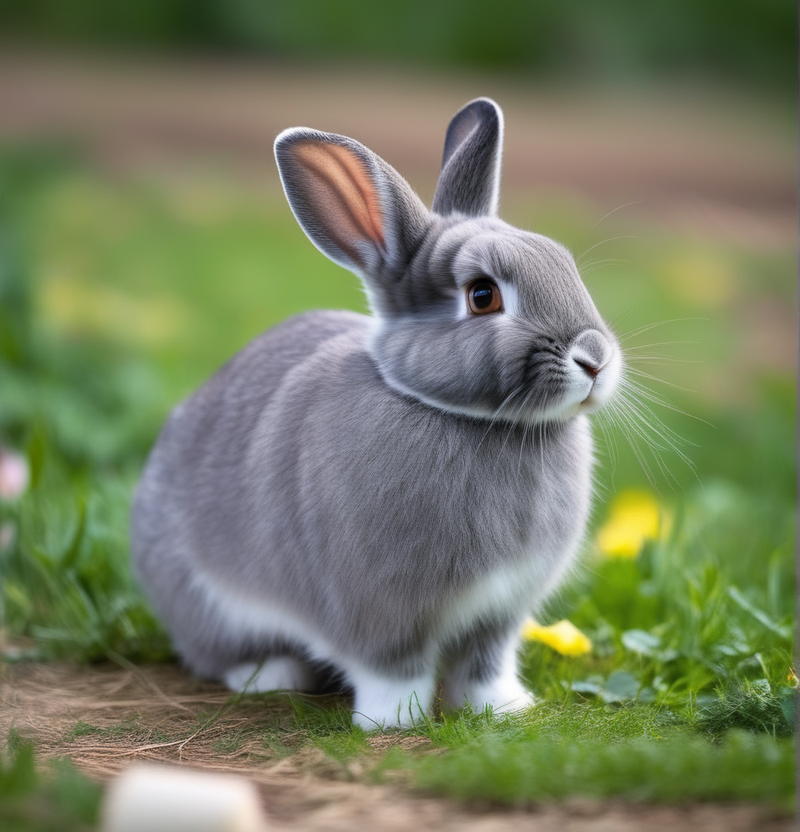

|  |
En la actualidad, existen más de 50 razas reconocidas de conejos, cada una con sus propias características únicas que han sido moldeadas a lo largo del tiempo mediante la selección artificial por parte de los seres humanos. Estas criaturas peludas y saltarinas vienen en diversos tamaños, colores y pelajes, convirtiéndolas en animales de compañía encantadores y populares.
Los conejos poseen sentidos agudos que les ayudan a sobrevivir en la naturaleza, aunque también los hacen encantadores y curiosos como mascotas. Su sentido del oído es excepcional, permitiéndoles detectar incluso los sonidos más tenues, mientras que su olfato agudo les ayuda a explorar su entorno y comunicarse con otros conejos. Recientes investigaciones han revelado aspectos interesantes sobre la inteligencia y el comportamiento de los conejos. Aunque a menudo se les considera animales tímidos, son capaces de aprender trucos y reconocer a sus dueños. Además, su comportamiento social es fascinante, ya que forman lazos cercanos con otros conejos y pueden mostrar afecto hacia los humanos que les brindan cuidado y atención.